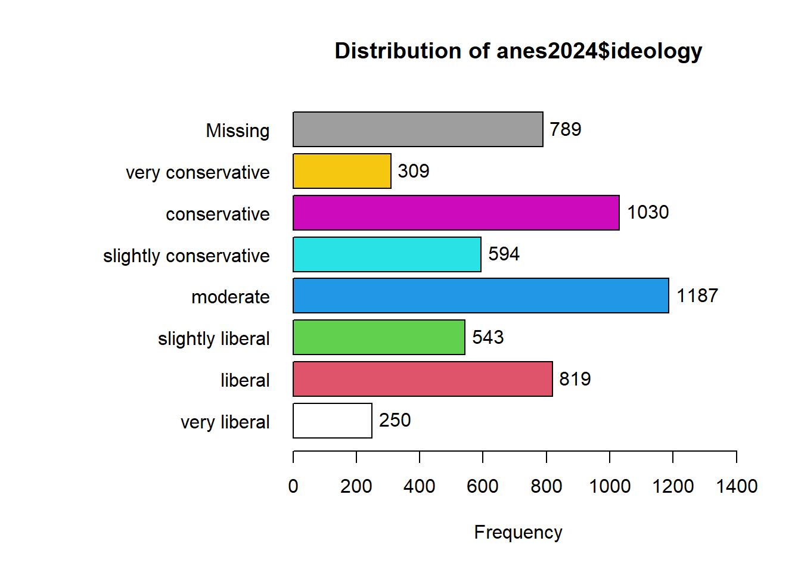

Chapter 4 Recoding and comparing values of variables
4.1 Getting started with this chapter
To get started in today’s chapter, open the project that you made in lab 1. If you forgot how to do this, see the instructions in section 2.2.
We are going to install three new packages to use today.They are called “epiDisplay”, “Hmisc”, and “flextable.” Enter these three commands into your Console one by one:
install.packages("Hmisc")
install.packages("tigerstats")
install.packages("flextable")Now, open a new script file and save it in your scripts folder as “chapter 4 practice.” Copy and paste this onto the page (updating the text so that it is about you):
####################################
# Your name
# 20093 Chapter 4, Practice exercises
# Date started : Date last modified
####################################
#libraries------------------------------------------
library(tidyverse)
library(epiDisplay) #the tab1 command helps us make nice frequency tables
library(Hmisc) #the cut2 command helps us simplify interval variables
library(tigerstats) #colPerc can also be useful with crosstabs
library(flextable) #this makes tables that we can easily export into a word processorNow select all the text on this page, run it, and save it.
4.2 Recoding ordinal and nominal variables
There are times that you will want to change the values of variables. Perhaps you are interested in one particular value of a key variable (such as married people, or high-income countries). Perhaps your variable has some values which you would like to treat as missing. Or, perhaps you will want to simplify a variable, or change a variable from character to numeric or vice versa. When doing so, you will have two powerful allies: the mutate() command and the recode() command, both available through the dplyr package that comes with tidyverse.
To start, let’s take a look at the ideology variable in the anes2024 dataset. We can use the tab1() command that we learned last lesson to look at how the values are distributed, running this command

## anes2024$ideology :
## Frequency %(NA+) %(NA-)
## very liberal 250 4.5 5.3
## liberal 819 14.8 17.3
## slightly liberal 543 9.8 11.5
## moderate 1187 21.5 25.1
## slightly conservative 594 10.8 12.6
## conservative 1030 18.7 21.8
## very conservative 309 5.6 6.5
## NA's 789 14.3 0.0
## Total 5521 100.0 100.0Looking at this output, we can see that there are seven possible values (excluding the NAs), ranging from “very liberal” to “very conservative.” There are times when we might want all of this detail, and we should not throw away data. However, we will often just want to compare liberals, moderates, and conservatives. To simplify this variable, we will first tell R to make a new version of the ANES dataframe that will house our new variable. Then, we will use mutate and recode to give values for our new variable. Here is what the code will look like:
anes2024<-anes2024 %>%
mutate(ideology3=recode(ideology, 'very liberal'="liberal", 'liberal'="liberal", 'slightly liberal'="liberal", 'slightly conservative'="conservative", 'conservative'="conservative", 'very conservative'="conservative")) There is a lot going on in the above command, so let’s try to break it down:
POST OPERATION DATAFRAME<-PRE OPERATION DATAFRAME %>%
mutate(NEW VARIABLE NAME=recode(OLD VARIABLE NAME,
‘OLD VARIABLE VALUE #1’="NEW VARIABLE VALUE #1",
‘OLD VARIABLE VALUE #2’="NEW VARIABLE VALUE #2",…)) Using mutate and recode together, we are generating a new version of our dataframe that has a new variable whose values are based on another variable. I have an important piece of advice when using this kind of command: be sure to copy and paste variable names and values from your Console screen to your script file, because it is very easy to make a typographical error when transcribing variable names and values. Even if you are careful, there will be times when you make an error in your code and R sends you an error message. Most of the time, you will be able to quickly figure out the source of your error, but if you ever cannot, please feel free to ask your instructor! Sometimes, you will realize that your error modified the dataframe in ways that you don’t like. In that case, you can go back to the original dataframe. If you were using anes2024, you can use this command to restore that dataframe:
load("Data/anes2024.Rda") Or, if that command doesn’t work for you, you can follow the instructions in section 1.6 to reload the original dataframe.
To confirm that our recode worked, we can run “table” on both our old and our new variable, like this:
table(anes2024$ideology)
table(anes2024$ideology3)When run each of these commands, you can see that our recoding worked. You should have have 1187 moderates in each variable. And, if we add the numbers of very liberal, liberal, and slightly liberal respondents (which we can do in R!), we can see that 250+819+543=1612. The same is also true with the conservatives.
What if we were interested in examining the horseshoe theory – that people on the extremely left and extreme right have some major things in common? In that case, we might want to generate a new variable which measures whether or not someone is an extremist. To do that, we could do another version of the mutate/recode command like we did above. But that would require us to type all seven values of our original variable into our code again, which takes a little while. Instead, we could also use the “.default” qualifier to tell R: assign this value to all other cases. Here is how that code would look:
anes2024<-anes2024 %>%
mutate(extremist=recode(ideology, 'very liberal'="extremist",
'very conservative'="extremist",
.default="not extremist"))Now, when we run the command:
##
## extremist not extremist
## 559 4173we can see that we successfully created our new variable.
4.3 Reversing the order of ordinal variables
Ordered factors in R have “levels” that are always displayed in the same order (it might be helpful to think of them as going from low to high). To see the levels of the ANES’s ideology variable, we can use this command:
## [1] "very liberal" "liberal"
## [3] "slightly liberal" "moderate"
## [5] "slightly conservative" "conservative"
## [7] "very conservative"The output after this command shows that the variable is set up so that “very liberal” is the “lowest” value (it comes first in the list), and “very conservative” is the “highest” value (it comes last in the list). However, what if we were writing a paper that focused on liberals and liberalism? In that case, we might want an ideology variable which treated these values in the opposite order, so that “very liberal” is the highest value on our scale. Here is how we would create a new ordered factor called “liberalism” which is the ideology variable reversed:
#first we create a vector called v which is the levels of our ideology variable
v<-levels(anes2024$ideology)
#second we reverse the order of v, telling R to make the largest value the smallest and the smallest the largest
v<-v[length(v):1]
#third, we use reorder to generate a new factor called liberalism with the opposite levels as our ideology variable
anes2024$liberalism<-reorder(anes2024$ideology,new.order=v)
#finally, we can remove our vector v, since we don't need it anymore
rm(v)To make sure that your new variable worked, you can enter table(anes2024$ideology) and table(anes2024$liberalism) into your console and see that both variables have 309 people that called themselves “very conservative” and 250 that called themselves “very liberal.”
4.4 Making ordinal variables numeric
Sometimes you might want to make an ordered factors a number that you can analyze mathematically. So, for example, let’s imagine that we wanted to be able to think of the liberalism variable that we just generated as a number rather than the words “very conservative,” “conservative,” etc. R makes this very easy to do, with the code “as.numeric.” You can make a variable called liberalism.n like this:
That code generates a new variable called liberalism.n with values from 1 (which we know from the levels of our liberalism variable means “very conservative”) to 7 (which means “very liberal”). This variable will be slightly easier to deal with in future chapters if the lowest item on the scale is 0, instead of 1. So, to make that happen, we can ask R to subtract one from every value of the liberalism.n variable like this:
Now if you run table(anes2024$liberalism.n), you will see that your new variable has values ranging from 0 to 6, and that the number of cases with each value is the same as they are in the liberalism variable.
4.5 Dealing with variables coded 0/1
When looking at data in the real world, we will often find variables coded with only two possible values – 0 or 1. These variables are sometimes called dummy variables or binary variables. In general, these variables are used to mean the presence or absence of some characteristic. For example, either someone is married (1), or they are not (0). Either a country is a democracy (1) or it is not (0). On the anes2024 dataframe, I have coded the variable “female” in this way. If you refer to the codebook, you can see that 0 means male and 1 means female. It will be useful mathematically to have it coded this way in future labs. But it will be less useful when generating graphics, since the “1” and “0”s produced on the axis and in the legends will not be that informative. So, we may want to generate a “sex” variable that uses words instead of numbers. We can do so with this code:
We can check our results with this code (we could also use tab1 instead of table here).:
table(anes2024$female)
table(anes2024$sex)You should see that R reports the same number as 1s with the old “female” variable” as it does “female” with the new “sex” variable. and the same should be true of 0s and “male”.
4.6 Simplifying interval variables
4.6.1 Simplifying interval variables using cut2()
Interval variables give us a lot of information, and it is sometimes too much! For example, we might want to generate a graph comparing age groups, rather than a graph of individuals at each age between 18 and 80. This is where the cut2() command from the Hmisc package can come in handy. Let’s say we want to create three roughly evenly distributed age groups. We can use cut2 like this:
The g=3 is telling R to divide age into three roughly equal groups and make them into a new variable called age3. If we wanted 4 groups, or 2 groups, or 5 groups, we could just change that number. Now let’s run table() on our new variable:
##
## [18,44) [44,65) [65,80]
## 1779 1772 1691This output is telling us that our new variable has three values—[18,44), [42,65), and [65,80]. This notation means that the first group has 18-year-olds to those younger than 44 (that is what the “)” means), the second group has 42-year-olds to those younger than 65 (again, we learn this from the closed parenthesis), and the third group has 65-year-olds and older. We could use mutate(recode()) on those value names, like we did above, but here is an easier solution. The cut2 command generates an ordered factor, which is how R likes to treat ordinal variables. Let’s take a look at the levels of our new age variable:
## [1] "[18,44)" "[44,65)" "[65,80]"This output means that [18,44) is the “low” level of the new age3 variable, [44,65) is the medium level, and [65,80] is the high level. To rename those variables, we can just make a list using the c() command that we learned in lab 1, like this:
When we run that command, R renames the levels of our age3 variable. When renaming the levels of a variable, be sure to list the new levels in an order that corresponds with the previous levels of the variable. If you typed “old” first, in the command below, you would be telling R to call people from 18-44 old, and you would also make “old” the lowest level of your age3 variable.
To confirm that this worked, you can type
table(anes2024$age3)and you should see your new labels.
4.6.2 Simplifying interval variables with case_when
In section 4.6 we learned how to use the cut2 command to divide interval variables into groups of roughly the same size. But what if we are interested in separating interval variables into groups above or below specific values? For example. we might be interested in looking at people in their teens, in their 20s, in their 30s, etc. To do that, we can write the following:
anes2024<-anes2024 %>%
mutate(age_groups=case_when(age %in% 18:19 ~ "teens",
age %in% 20:29 ~ "20s",
age %in% 30:39 ~ "30s",
age %in% 40:49 ~ "40s",
age %in% 50:59 ~ "50s",
age %in% 60:69 ~ "60s",
age %in% 70:80 ~ "over 70"))This code uses mutate, which we first saw in section 4.2, to create a new variable called age_groups. We set the values for our new variable with a new command that is available through the tidyverse package, case_when(). This command lets us create variable values based on ranges of numbers from our old variable (which we identify with the %in% and colons between the values).
We can take a look at our new variable using table, as follows:
##
## 20s 30s 40s 50s 60s over 70 teens
## 500 841 874 802 1014 1162 49You might notice that the values for our new variable are listed in a strange order, with 20s first and teens last. This is because our new variable is a character variable, and the values are thus listed in in alphabetical order.
To fix this, we can make our new variable into an ordered factors and set the levels from youngest to oldest like this:
anes2024$age_groups<-ordered(anes2024$age_groups,
levels=c("teens","20s","30s","40s","50s","60s","over 70"))Now when we enter table(anes2024$age_groups) into the Console we can see the variable values listed in a way that makes more sense. This will also be useful when making tables and graphs.
4.7 Cross-tabulation tables
4.7.1 Generating cross-tabs
Up until now, we have focused on one single variable at a time. This is an essential component of social scientific analysis. However, most of the questions that we are interested in are about the relationship between two or more variables. The rest of the work that we will do in R from this point forward will be geared toward helping us to make observations and inferences about the relationship between more than one variable.
One way that we can start to examine the relationship between more than one variable is by making cross-tabulation tables (often called crosstabs). These are essentially two frequency tables presented in a table. Crosstabs are most useful when looking at the relationship between twp ordinal or nominal variables. For example, let’s look at the relationship between education and income in the anes2024 dataframe. We can hypothesize that people with more education will make more income. To test this, we can first use the xtabs() command, like this:
## education
## income less than high school high school some college
## under $9,999 81 137 131
## $10,000 to $29,999 65 156 239
## $30,000 to $59,999 57 271 387
## $60,000 to $99,999 33 191 391
## $100,000 to $249,999 19 131 423
## $250,000 or more 1 22 70
## education
## income ba graduate degree
## under $9,999 68 47
## $10,000 to $29,999 68 25
## $30,000 to $59,999 205 98
## $60,000 to $99,999 297 188
## $100,000 to $249,999 548 488
## $250,000 or more 110 188Let’s break down how we used this command: we put the dependent variable, income, first, and then the independent variable, education, second. Crosstabs generally have the independent variable in columns and the dependent variable in rows. This setup lets us do that.
4.7.2 Adding column totals to cross-tabs
The output that our command generated is a basic crosstab. It tells us that 81 people with less than a high school education make under $9,999 per year, 65 people with less than a high school education make $10,000-29,999, etc. Now we might be tempted to look at this and say: “Graduate school is a waste of time! 488 people from our sample with graduate degrees make $100,000 to $250,000, while 548 people a BA make $100,000 to $250,000.” However, that would be a mistake! To understand why, we should look at the column totals from our crosstab, which we can produce with this command:
## education
## income less than high school high school some college
## under $9,999 81 137 131
## $10,000 to $29,999 65 156 239
## $30,000 to $59,999 57 271 387
## $60,000 to $99,999 33 191 391
## $100,000 to $249,999 19 131 423
## $250,000 or more 1 22 70
## Sum 256 908 1641
## education
## income ba graduate degree Sum
## under $9,999 68 47 464
## $10,000 to $29,999 68 25 553
## $30,000 to $59,999 205 98 1018
## $60,000 to $99,999 297 188 1100
## $100,000 to $249,999 548 488 1609
## $250,000 or more 110 188 391
## Sum 1296 1034 51354.7.3 Adding column percents to cross-tabs
Take a look at the above column totals. Our anes2024 dataframe has 1,034 people with graduate degrees, while it has 1,296 people with BAs. So, returning to those two numbers from above, the 488 people with graduate degrees with household incomes of $100,000 to $250,000 make up 47.2% of all of graduate degree holders in our sample (because 488/1034=.472), while the 548 people with BAs with household incomes of $100,000 to $250,000 make up only 42.3% of all of the people with some college in our sample (because 528/1296=.423). In other words, there is a larger proportion of people with graduate degrees with household incomes of $100,000 to $250,000 than people with BAs with household incomes of $100,000 to $250,000. Thus, when interpreting crosstabs it is important to look at the column percents, and not just the raw numbers. To make R generate all of the column percents in a crosstab at the same time, we can use the colPerc() command from the tigerstats package that we installed for today. We can enter this command:
## education
## income less than high school high school some college
## under $9,999 31.64 15.09 7.98
## $10,000 to $29,999 25.39 17.18 14.56
## $30,000 to $59,999 22.27 29.85 23.58
## $60,000 to $99,999 12.89 21.04 23.83
## $100,000 to $249,999 7.42 14.43 25.78
## $250,000 or more 0.39 2.42 4.27
## Total 100.00 100.00 100.00
## education
## income ba graduate degree
## under $9,999 5.25 4.55
## $10,000 to $29,999 5.25 2.42
## $30,000 to $59,999 15.82 9.48
## $60,000 to $99,999 22.92 18.18
## $100,000 to $249,999 42.28 47.20
## $250,000 or more 8.49 18.18
## Total 100.00 100.00Remember when interpreting this output that the numbers are now the column percents, not the raw numbers. If you take a look at this output, you will see that people with more education seem to make more money. If you look at the top income category row (for those with household incomes of $250,000 or more, the percent of thsoe at the lowest education level, “less than high school” in that income category is 0.39%, and as the education level increases this percent increase to 2.42%, 4.27%, 8.49%, and 18,18% for those with graduate degrees.
4.7.4 Exporting cross-tabs for your word processor
If you have been following along, the cross-tabs that you have generated have shown up reasonably neatly in the Console of R-Studio. But often, you will want to export those tables into a format that you can easily bring into your word processor so that you can refer to it in papers that you are writing. To do this, you first want to give the cross tab you want to export a name as an object, like this:
That command creates a new object called “ctab1.” If you paste ctab1 into your Console and hit enter, you will see that same crosstab that you made in section 4.7.3.
Before exporting this crosstab, you have to make two changes to it in order for the export command that we will use to work. You need to change it to a dataframe, and you need to set the row names (which are currently the different income levels) as a column. To do both of those things, you can run this command:
Now your “ctab1” is formatted to be exported nicely (when you use this with other tables, just rename the text in quotes after “rownames_to_columns” to fit what you’d like to call your rownames). To export this, run this command:
This has created a file called “ctab1.docx” in the main folder where you have your Scope and Methods labs (the folder that you created in section 1.2). You can open that file in Microsoft Word, or you can pull it into a Pages file or a Google Document. If you’d rather export your table into a rich text format file, you can use save_as_rtf instead of save_as_docx in the above command.
4.8 Mean comparison tables
Crosstabs are useful when we have two nominal or ordinal variables. But what if we want to look at the relationship between a nominal or ordinal variable and an interval variable? In that case, a mean comparison table can be helpful. The tidyverse has some commands that we can use to generate such a table. To demonstrate, let’s look at our states2025 dataframe, and the relationship between the region variable and the govApproval2024 variable (which measures the proportion of the population that approved of a state’s governor in 2024). The first thing that we need to learn is the group_by() command. This tells R: “make groups based on the variable that we tell you.” In our case, we want to make groups based on our independent variable (which, for now, must be ordinal or nominal). Once we have done that, we can use the summarise() command to get the mean. For good measure, we can also use the summarise() command to calculate the standard deviation as well as the size of each group. Here is what that command looks like:
states2025 %>%
group_by(region) %>%
summarise(mean=mean(govApproval2024), sd=sd(govApproval2024), n=n())## # A tibble: 4 × 4
## region mean sd n
## <chr> <dbl> <dbl> <int>
## 1 midwest 0.348 0.0553 12
## 2 northeast 0.388 0.0545 9
## 3 south NA NA 17
## 4 west 0.335 0.0380 13We can see that, in the mean midwest state, .348 (or 34.8%) of the population approved of the governor, with a standard deviation of .0553, and .388 of the population of the mean northeast state (or 38.8% approved of the government) approved of the governor, with a standard deviation of .0545. The reason that the South is NA is because there is a Southern “state” without a governor – the District of Columbia not technically a state). To filter out states without data on that variable, we can add another line to our command: filter(!is.na(govApproval2024))%>% (we used a version of this command in section 3.2.1). Our new command looks like this:
states2025 %>%
filter(!is.na(govApproval2024)) %>%
group_by(region) %>%
summarise(mean=mean(govApproval2024), sd=sd(govApproval2024), n=n())## # A tibble: 4 × 4
## region mean sd n
## <chr> <dbl> <dbl> <int>
## 1 midwest 0.348 0.0553 12
## 2 northeast 0.388 0.0545 9
## 3 south 0.347 0.0597 16
## 4 west 0.335 0.0380 13Now we can see that northeast states seem to have the highest approval of their governors, and also that there is no region where the majority of people approve of the governor in the average state.
To export this table so that we can easily pull it into our word processor, we can do something similar to what we did in section 4.7.4. However, it is easier to export a mean comparison table because we don’t have to first tell R to treat it as a dataframe. You can export the file with the following code:
mc1<-states2025 %>%
filter(!is.na(govApproval2024)) %>%
group_by(region) %>%
summarise(mean=mean(govApproval2024), sd=sd(govApproval2024), n=n())
flextable(mc1) %>% save_as_docx(path="mc1.docx")Now you should see a file called “mc1.docx” in the main folder where you have your Scope and Methods labs (the folder that you created in section 1.2).
4.9 Review of this chapter’s commands
| Command | Purpose | Library |
|---|---|---|
| mutate(recode()) | A set of commands to rename the values of variables. | dplyr (tidyverse) |
| cut2() | Turn an interval variable into an ordinal variable. Remember to specify “g=” to tell R how many groups to split your variable into. | Hmisc |
| levels() | You can use this command to see the levels of an ordered factor, or you can also use it to assign new levels to an ordered factor, like this: levels(df$variable<-c(“new level1”,“new level2”,…) | Base R |
| reorder() | You can use this command to change the order of levels in an ordered factor | Base R |
| as.numeric | You can use this command to make a factor into a numeric variable, like this: df$NewVariable<-as.numeric(df$Variable) | Base R |
| case_when() | You can use this command along with mutate() and %in% to assign ranges of an interval variable to a new value of a new variable | dplyr (tidyverse) |
| ordered | you can use this command to make a variable into an ordered factor | Base R |
| xtabs() | Makes a crosstab table with raw values. Remember to define variables like this: xtabs(~DV+IV, data=DATAFRAME) | Base R |
| addmargins(xtabs()) | Makes a crosstab table with row and column totals. | Base R |
| colPerc(xtabs()) | Makes a crosstab table with column percents. Useful for making comparisons. | tigerstats |
| flextable | You can use this with %>% save_as_docx(path=“…”) to export your tables for word processors | flextable |
| group_by() | A dplyr command that is useful when summarizing a dataframe according to a nominal or ordinal variable. Usually used with the “pipe” (%>%). | dplyr (tidyverse) |
| summarise() | A dplyr command that is useful when summarizing a dataframe according to a nominal or ordinal variable. Usually used with the “pipe” (%>%). | dplyr (tidyverse) |